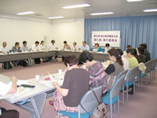

| 【日 時】 |
９月19日（水）13:30～15:30 |
【場 所】 |
埼玉会館３Ｂ会議室 |
| 【出席者数】 |
34人（21団体30人＋事務局４人） |
|
|
■議 題
- 第43回埼玉県消費者大会基調報告骨子（４次案）・県への要請書（２次案）を提案し、意見交換を行いました。出された意見を反映させて事務局の責任でまとめることが確認されました｡
- 大会アピール（２次案）を提案し、意見交換を行いました。出された意見を反映させて事務局の責任でまとめることが確認されました｡
- 第43回埼玉県消費者大会予算(案)を確認しました。大会資料の広告掲載について、趣旨に賛同できる団体の情報提供をお願いしました。
- 全体会について、時間の流れや舞台での着席場所を説明し確認しました。
- 大会当日の要員と集合時間、集合場所の最終確認を行いました。
- 分科会ごとに分かれ、役割分担や運営についての最終確認を行いました。
|